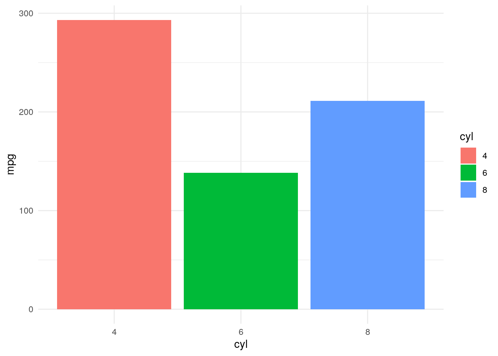
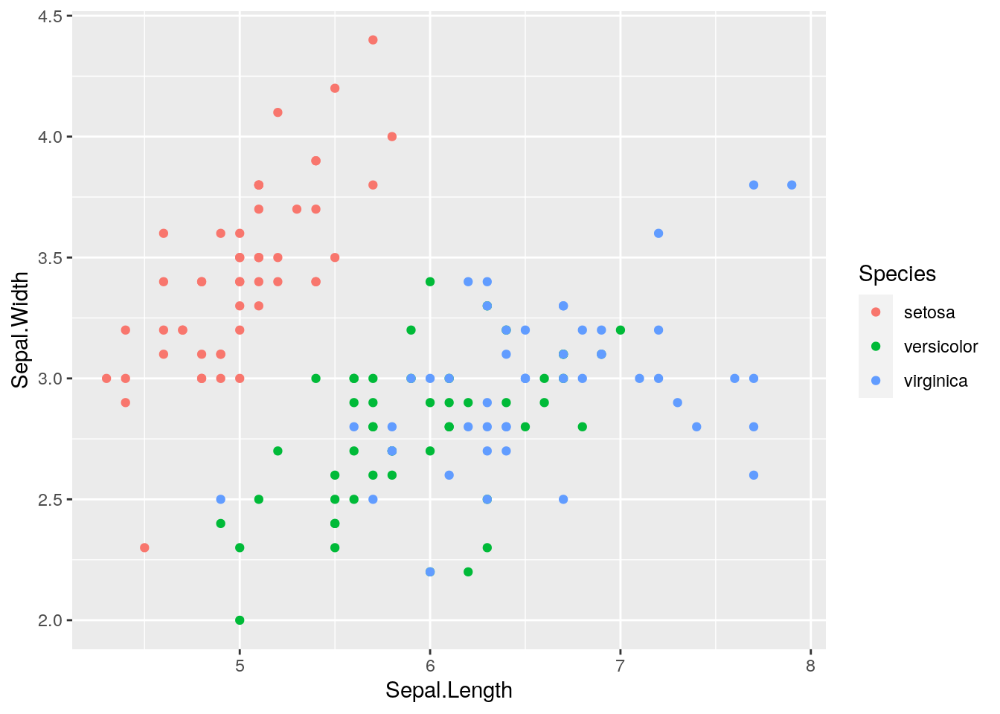

df <- data.frame(x = 1:3, y = 3:1)
filter(df, x == 3) x y
1 3 1Khi phân tích dữ liệu, một kỹ năng nâng cao giúp tăng năng suất phân tích là kỹ năng viết hàm. Về lý thuyết, bất cứ đoạn code nào cũng có thể chuyển thành hàm. Một hàm viết tốt phải đảm bảo 3 yếu tố chính:
Việc viết hàm là cả một nghệ thuật và đòi hỏi có sự hiểu biết sâu sắc về R. Tuy nhiên, khi đứng dưới góc độ ứng dụng, ta có thể viết hàm một cách nhanh chóng dựa trên khái niệm về NSE (Non Standard Evaluation).
df <- data.frame(x = 1:3, y = 3:1)
filter(df, x == 3) x y
1 3 1Tuy nhiên, câu lệnh sau sẽ không hoạt động
# Cách 1: Không hoạt động
my_var <- xError in eval(expr, envir, enclos): object 'x' not founddf %>% filter(my_var == 1)Error in `filter()`:
ℹ In argument: `my_var == 1`.
Caused by error:
! object 'my_var' not found# Cách 2: Không hoạt động
my_var <- "x"
df %>% filter(my_var == 1)[1] x y
<0 rows> (or 0-length row.names)Ba thành phần cơ bản của hàm:
library(dplyr)
squared <- function(x){return(x^2)}
squared(4)[1] 16squared %>% body{
return(x^2)
}squared %>% formals$xsquared %>% environment()<environment: R_GlobalEnv>Primitive function: Là các hàm được thực hiện thẳng từ .Primitive() trên R base và không có các thành phần cơ bản của hàm, vd: sum, sin, cos…
sum %>% formals()NULLsin %>% body()NULLcos %>% environment()NULLInfix function
Các hàm trong R phần lớn đều là prefix function, nghĩa là tên hàm sẽ đứng trước tham số. Tuy nhiên ta có thể tạo ra infix function với các ký tự %name_function%. Loại hàm này có thể sử dụng như các toán từ +, X trong toán học. Infix function có kết cấu như sau:
%Toán tử% = Hàm
#Prefix function
bin_string <- function(a, b) {paste(a, b, sep = " ")}
bin_string("He", "lo")[1] "He lo"#Infix function
`%+%` <- function(a, b) {paste(a, b, sep = " ")}
"He" %+% "lo" [1] "He lo"`%+%`("He", "Lo")[1] "He Lo"#Ví dụ
5 + 6[1] 11`+`(5,6)[1] 11Ví dụ, x <- 5 thì "x" là quote vì chỉ lưu tên của biến dưới dạng string. x = 5 là unquote vì đã tính đến giá trị thực sự mà x lưu trữ là 5.
Xem thêm ví dụ sau:
greet <- function(name){
print("Hello, name!")
}
greet("duc anh")[1] "Hello, name!"Hàm trên không hoạt động như chúng ta mong muốn vì name đang được quotes và chỉ lưu trữ dưới dạng string.
greet <- function(name){
glue::glue("Hello, {name}!")
}
greet("duc anh")Hello, duc anh!Ở hàm thứ hai, name được tính toán đến giá trị thực sự mà biến này đang lưu trữ (giá trị duc anh).
Để quotes, ta dùng hàm quo(). Kết quả của quo() là quosure, một dạng của biểu thức (formula).
quo(x)<quosure>
expr: ^x
env: globalquo(a + b + c)<quosure>
expr: ^a + b + c
env: globalquo("group_var")<quosure>
expr: ^"group_var"
env: emptyĐể sử dụng quosure trong hàm, ta sử dụng enquo. Sự khác biệt giữa quo và enquo có thể phân cấp như sau:
quo: Tạo quosure với biếnenquo: Tạo quosure với giá trị của biến.x <- 5
# Ví dụ 1
quo(x) <quosure>
expr: ^x
env: globalenquo(x)<quosure>
expr: ^5
env: empty# Ví dụ 2
quo(x + 2)<quosure>
expr: ^x + 2
env: globalĐể unquote, ta dùng hàm !! để tính các giá trị mà biến đang lưu trữ.
my_summarise <- function(df, group_var) {
group_var <- quo(group_var)
print(group_var)
df %>%
group_by(!! group_var) %>%
summarise(mean = mean(mpg))
}
my_summarise(mtcars, cyl)<quosure>
expr: ^group_var
env: 0x55cd0421ee40Error in `group_by()`:
! Must group by variables found in `.data`.
✖ Column `group_var` is not found.Câu lệnh trên không thực hiện được vì quo(group_var) sẽ trả ra kết quả là ^group_var, giá trị này không tồn tại. Cái chúng ta cần là biểu thức (expression) dạng ^cyl. Lúc này, ta phải dùng enquo
my_summarise <- function(df, group_var) {
group_var <- enquo(group_var)
print(group_var)
df %>%
group_by(!! group_var) %>%
summarise(mean = mean(mpg))
}
my_summarise(mtcars, cyl)<quosure>
expr: ^cyl
env: global# A tibble: 3 × 2
cyl mean
<dbl> <dbl>
1 4 26.7
2 6 19.7
3 8 15.1my_var <- quo(mpg)
mtcars %>% summarise(mean = mean(!!my_var)) mean
1 20.09062Ta cũng có thể sử dụng quo, enquo với một nhóm các biểu thức như sau
exp <- quo(summarise(
mtcars, mean(mpg)
))
exp<quosure>
expr: ^summarise(mtcars, mean(mpg))
env: globalquo_namequo_name cho phép convert biểu thức thành dạng string.
x <- 5
quo(x)<quosure>
expr: ^x
env: globalquo(x) %>% quo_name()[1] "x"enquo(x)<quosure>
expr: ^5
env: emptyenquo(x) %>% quo_name[1] "5"Lưu ý:
:=!!my_rename <- function(data, var){
var <- enquo(var)
new_var <- paste0("new_", quo_name(var))
data <- data %>%
rename(!!new_var := !!var)
return(data)
}
my_rename(mtcars, mpg) %>% head new_mpg cyl disp hp drat wt qsec vs am gear carb
Mazda RX4 21.0 6 160 110 3.90 2.620 16.46 0 1 4 4
Mazda RX4 Wag 21.0 6 160 110 3.90 2.875 17.02 0 1 4 4
Datsun 710 22.8 4 108 93 3.85 2.320 18.61 1 1 4 1
Hornet 4 Drive 21.4 6 258 110 3.08 3.215 19.44 1 0 3 1
Hornet Sportabout 18.7 8 360 175 3.15 3.440 17.02 0 0 3 2
Valiant 18.1 6 225 105 2.76 3.460 20.22 1 0 3 1mutatemy_mutate <- function(data, var){
var <- enquo(var)
data <- data %>%
mutate(!!"new_var" := !!var*2)
return(data)
}
mtcars %>%
select(mpg) %>%
my_mutate(mpg) %>% head mpg new_var
Mazda RX4 21.0 42.0
Mazda RX4 Wag 21.0 42.0
Datsun 710 22.8 45.6
Hornet 4 Drive 21.4 42.8
Hornet Sportabout 18.7 37.4
Valiant 18.1 36.2quos(...) & !!! thay cho enquo và !!my_summarise <- function(df, value_var,...){
group_var <- quos(...)
value_var <- enquo(value_var)
df %>% group_by(!!!group_var) %>%
summarise(mean = mean(!!value_var))
}
my_summarise(mtcars, mpg, cyl, vs)# A tibble: 5 × 3
# Groups: cyl [3]
cyl vs mean
<dbl> <dbl> <dbl>
1 4 0 26
2 4 1 26.7
3 6 0 20.6
4 6 1 19.1
5 8 0 15.1Lưu ý: Trong thực tế, khi không muốn viết hàm mà vẫn có thể sử dụng ứng dụng của toán tử !, ta có thể sử dụng toán tử !!! nhu sau.
my_var <- c("mpg", "cyl")
mtcars %>% select(!!!my_var) %>% head mpg cyl
Mazda RX4 21.0 6
Mazda RX4 Wag 21.0 6
Datsun 710 22.8 4
Hornet 4 Drive 21.4 6
Hornet Sportabout 18.7 8
Valiant 18.1 6analytics_summarise <- function(data, value_var,...){
group_var <- quos(...)
value_var <- enquo(value_var)
data %>%
group_by(!!!group_var) %>%
summarise(n = n(),
total = sum(!!value_var),
min = min(!!value_var),
q25 = quantile(!!value_var, 0.25, na.rm = T),
q50 = quantile(!!value_var, 0.50, na.rm = T),
q75 = quantile(!!value_var, 0.75, na.rm = T),
q90 = quantile(!!value_var, 0.90, na.rm = T),
q95 = quantile(!!value_var, 0.95, na.rm = T),
max = max(!!value_var),
mean = mean(!!value_var, na.rm = T),
mean_trimed = mean(!!value_var, trim = 0.1, na.rm = T)) %>%
ungroup -> result
return(result)
}
# Một biến
mtcars %>%
analytics_summarise(mpg, cyl)# A tibble: 3 × 12
cyl n total min q25 q50 q75 q90 q95 max mean mean_trimed
<dbl> <int> <dbl> <dbl> <dbl> <dbl> <dbl> <dbl> <dbl> <dbl> <dbl> <dbl>
1 4 11 293. 21.4 22.8 26 30.4 32.4 33.2 33.9 26.7 26.4
2 6 7 138. 17.8 18.6 19.7 21 21.2 21.3 21.4 19.7 19.7
3 8 14 211. 10.4 14.4 15.2 16.2 18.3 18.9 19.2 15.1 15.2# Nhiều biến
mtcars %>%
analytics_summarise(mpg, cyl, am)# A tibble: 6 × 13
cyl am n total min q25 q50 q75 q90 q95 max mean
<dbl> <dbl> <int> <dbl> <dbl> <dbl> <dbl> <dbl> <dbl> <dbl> <dbl> <dbl>
1 4 0 3 68.7 21.5 22.2 22.8 23.6 24.1 24.2 24.4 22.9
2 4 1 8 225. 21.4 25.2 28.8 30.9 32.8 33.4 33.9 28.1
3 6 0 4 76.5 17.8 18.0 18.6 19.8 20.7 21.1 21.4 19.1
4 6 1 3 61.7 19.7 20.4 21 21 21 21 21 20.6
5 8 0 12 181. 10.4 14.0 15.2 16.6 18.6 18.9 19.2 15.0
6 8 1 2 30.8 15 15.2 15.4 15.6 15.7 15.8 15.8 15.4
# ℹ 1 more variable: mean_trimed <dbl>Tương tự với dplyr, lập trình NSE có thể sử dụng đơn giản với ggplot2.
my_chart <- function(data, value_var, group_var){
value_var <- enquo(value_var)
group_var <- enquo(group_var)
data %>%
ggplot(aes(!!group_var, !!value_var)) +
geom_bar(stat = "identity",
aes(fill = !!group_var)) +
theme_minimal()
}
mtcars %>%
mutate(cyl = as.factor(cyl)) %>%
group_by(cyl) %>%
summarise(mpg = sum(mpg)) %>%
my_chart(mpg, cyl)
Ta có thể đọc text như câu lệnh trong R với eval và parse:
parse - cho phép biến đổi text sang dạng câu lệnh nhưng không thực hiện câu lệnh (not evaluate)eval - cho phép thực hiện câu lệnh# Ví dụ 1
x <- "5 + 5"
eval(parse(text = x))[1] 10# Ví dụ 2
y <- "iris %>% ggplot(aes(
Sepal.Length, Sepal.Width
)) +
geom_point(aes(col = Species))"
eval(parse(text = y))
Khi viết hàm trong R, cần phải lưu ý các trường hợp bị lỗi khiến hàm không triển khai được. Ví dụ:
my_func <- function(x){
x + 7
}
my_func(8)[1] 15# my_func("8")Để xử lý trường hợp trên, có 2 cách:
# Cách 1
my_func2 <- function(x){
if (is.numeric(x)){
x + 7
} else {
NA
}
}
my_func2(2)[1] 9my_func2("2")[1] NApossibly trong purrrmy_func3 <- possibly(my_func, otherwise = NA)
my_func3(8)[1] 15my_func3("8")[1] NAmap_dbl(list("1", 8, 9), my_func3)[1] NA 15 16Lưu ý: Với trường hợp kết quả trả ra là dataframe, sử dụng option otherwise = data.frame không cho kết quả như mong muốn mà phải chỉnh sửa ngay từ hàm bên trong
my_df <- function(x){
return(data.frame(x = x, x_squared = x^2))
}
my_df <- possibly(my_df, otherwise = data.frame)
# Does not work
# list(8, 9, "c") %>% map(my_df)my_df2 <- function(x){
if (is.numeric(x)){
return(data.frame(x = x, x_squared = x^2))
} else {
return(data.frame(x = NA, x_squared = NA))
}
}
list(7, 8, "a") %>% map_df(my_df2) x x_squared
1 7 49
2 8 64
3 NA NA{{}}Với tidyverse ở các phiên bản mới (sau 2020) đã cho phép đơn giản hóa quá trình viết hàm bằng cách sử dụng {{}} thay thế cho enquo và !!.
Xem ví dụ sau
library(dplyr)
my_func1 <- function(data, x, y){
result <- data %>%
group_by({{y}}) %>%
summarise(
avg = mean({{x}}),
q50 = quantile({{x}}, 0.5))
return(result)
}
my_func1(mtcars, mpg, am)# A tibble: 2 × 3
am avg q50
<dbl> <dbl> <dbl>
1 0 17.1 17.3
2 1 24.4 22.8my_func2 <- function(data, x, ...){
result <- data %>%
group_by(...) %>%
summarise(
avg = mean({{x}}),
q50 = quantile({{x}}, 0.5))
return(result)
}
my_func2(mtcars, mpg, am, vs)# A tibble: 4 × 4
# Groups: am [2]
am vs avg q50
<dbl> <dbl> <dbl> <dbl>
1 0 0 15.0 15.2
2 0 1 20.7 21.4
3 1 0 19.8 20.4
4 1 1 28.4 30.4rename với tên biến là một thành phần trong biến cũ, vẫn phải dùng kết hợp := và quo_namemy_func3 <- function(data, x){
new_name <- paste0(quo_name(quo({{x}})), "_new")
data %>%
mutate(!!new_name := {{x}})
}
my_func3(mtcars %>% select(mpg), mpg) %>% head mpg mpg_new
Mazda RX4 21.0 21.0
Mazda RX4 Wag 21.0 21.0
Datsun 710 22.8 22.8
Hornet 4 Drive 21.4 21.4
Hornet Sportabout 18.7 18.7
Valiant 18.1 18.1